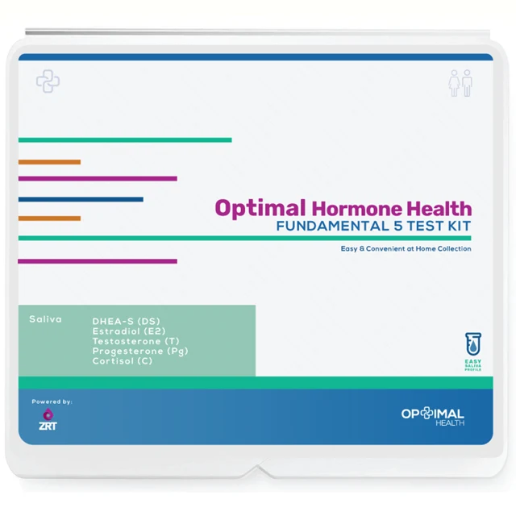

SalivaView kit in store
Optimal Hormone HealthFundamental 5
A starting point for hormone conversations.
For women and men exploring sex and adrenal hormone levels.
- What it measures
- Estradiol (E2), progesterone (Pg), testosterone (T), DHEA-S (DS), cortisol.
- What’s included
- At-home saliva collection kit and analysis of five hormones.
- Follow-up
- Consultation is not specified in this listing.
Collection & timing details
The listing describes profiles with cortisol collected once, twice, or four times daily. Confirm the profile and collection schedule before ordering.